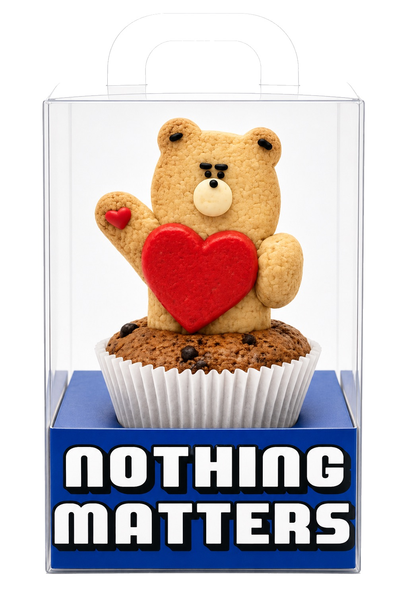
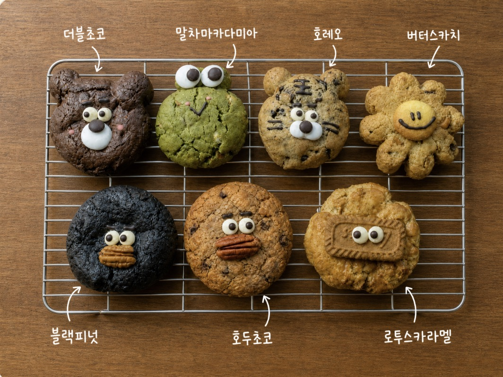
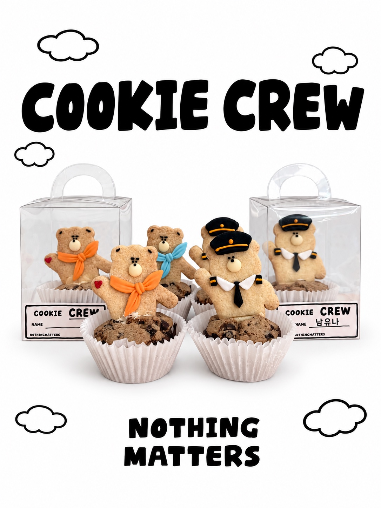
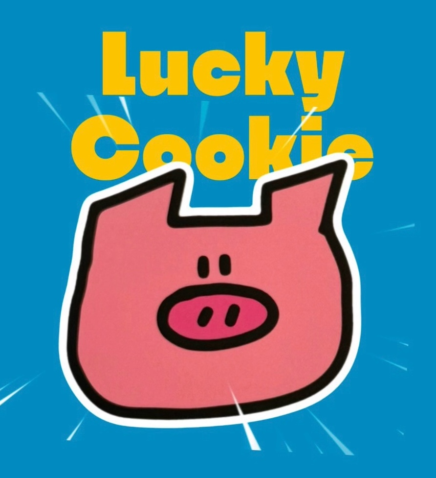
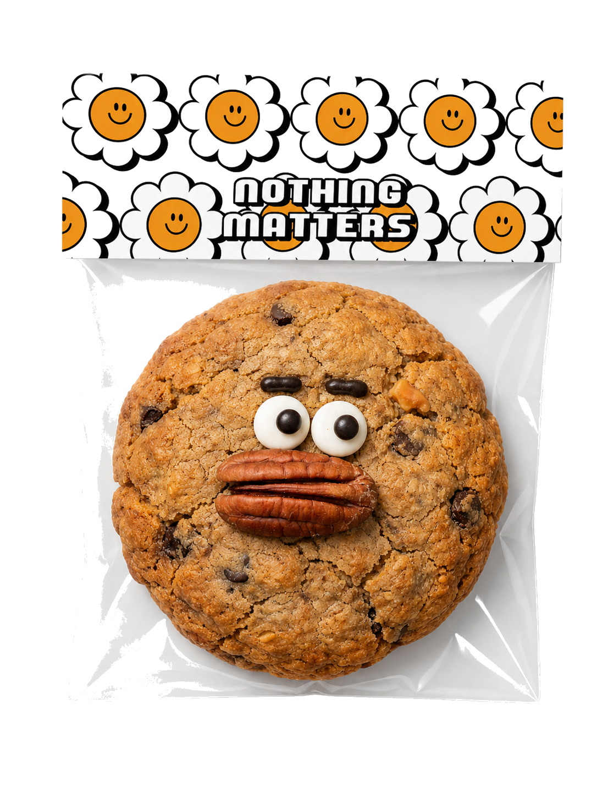
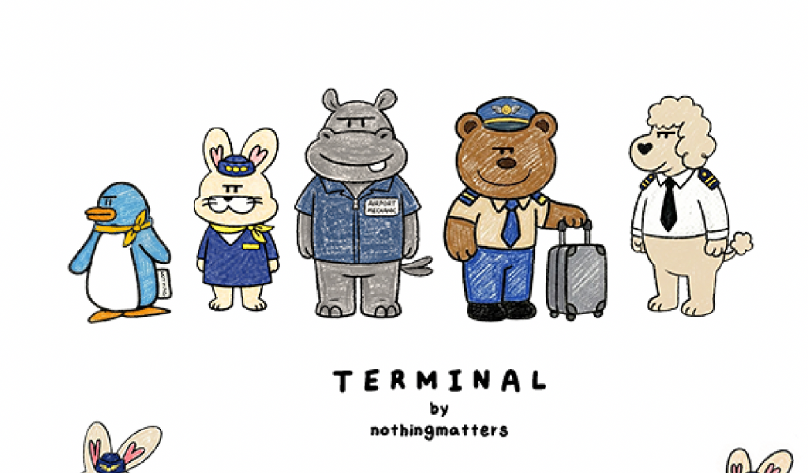

NOTHINGMATTERS
MAGOK · COOKIE & FAVOR
MAGOK · GANGSEO COOKIE HUB
마곡 디저트 선물,
마곡 디저트 선물,
쿠키 답례품을 골라보세요
마곡에서 전할 디저트 선물과 회사 간식, 공항동 작업실에서 예약 제작해요. 수제쿠키와 답례품을 고르고 필요한 날짜·수량·수령 방법을 상담해 주세요.
MAGOK · GONGHANG-DONG
마곡에서 받을 선물,
마곡에서 받을 선물,
공항동에서 예약 제작합니다.
낫띵메터스는 서울 강서구 공항동의 예약 제작·예약 픽업 작업실입니다. 선물을 전할 날과 장소에 맞춰 제작 일정, 포장과 수령 방법을 함께 정리해 드립니다.
MAGOK COOKIE LINE-UP
마곡 디저트 선물, 어떤 쿠키가 맞을까요?
회사에서 나눌 간식부터 개별 답례품까지, 실제 상품 사진으로 고르세요. 맛·구성·포장 옵션은 각 상품 상세페이지에서 확인할 수 있습니다.




MADE BY NOTHINGMATTERS
실제로 이런 쿠키를 만들고 있어요
홈의 최근 제작 아카이브와 같은 사진을 보여드려요. 새로 공개한 사진은 이곳에도 함께 반영됩니다.
MAGOK FAVORS & GIFTS
마곡 답례품, 전할 상황에 맞춰 고르세요.
마곡 인근 공항동에서 준비하는 쿠키 선물과 답례품을 목적에 맞는 안내로 이어드립니다.
회사 감사 선물
회사에 전할 가벼운 감사 쿠키를 찾는다면 소량 선물 안내에서 시작해보세요.
소량 선물 보기 →행사·세미나
날짜와 수량이 정해진 행사는 기업행사 쿠키 가이드로 이어집니다.
기업행사 안내 →승진·퇴사
짧은 문구와 기념 포인트가 필요하다면 퇴사·승진 답례품 구성을 확인하세요.
승진·퇴사 답례품 보기 →결혼·개인 답례
정갈한 웨딩 답례 흐름은 결혼식 답례품 쿠키 가이드에서 확인할 수 있어요.
웨딩 답례 보기 →가벼운 쿠키 선물
제품을 아직 고르지 않았다면 행사일과 수량을 알려주시면 맞는 흐름부터 안내합니다.
DESSERT GIFT & PACKAGING마곡 디저트 답례품,
마곡 디저트 답례품,
포장은 어떻게 고르면 좋을까요?
같은 쿠키라도 한 사람에게 건네는 선물인지, 여러 명과 나눌 간식인지에 따라 필요한 포장이 달라집니다.
한 사람씩 건네는 선물
개별로 전달할 마곡 쿠키 선물은 받는 인원과 포장 단위를 먼저 정하세요. 수제꾸덕쿠키의 1구·2구·4구 옵션을 비교할 수 있습니다.
수제쿠키 포장 비교 →회의·팀에서 나누는 간식
마곡 사무실 간식은 참여 인원, 나눠 줄 개수, 개별 포장 필요 여부를 정리해 주세요. 제품별 구성과 가능한 수량을 확인해 안내합니다.
단체 간식 준비 안내 →문구를 전하는 답례품
감사·승진·퇴사 인사를 담고 싶다면 브루키의 캐릭터·짧은 문구 선택을 확인하세요. 별도 디자인과 포장 요청은 가능 범위를 상담합니다.
브루키 문구·구성 보기 →MAGOK COMPANY GIFT GUIDE마곡 회사 간식·기업 선물,
마곡 회사 간식·기업 선물,
상황별로 준비해요.
행사 목적과 수령 조건을 먼저 정하면 제품과 상담 흐름을 더 빠르게 고를 수 있어요.
팀·직원 감사 선물
받는 인원, 희망 날짜와 예산을 먼저 확인하세요.
소량 선물 확인 →세미나·기업행사
마곡 세미나 간식은 행사 시각, 수량, 배부 방식과 포장·문구 필요 여부를 먼저 확인하세요.
기업행사 안내 →승진·퇴사·송별
짧은 문구가 필요한 답례 구성과 견적부터 확인하세요.
승진·퇴사 답례품 보기 →외부 방문객·가벼운 선물
제품을 먼저 고른 뒤 수령 방법을 확인하세요.
제품 라인업 보기 →제품 선택 힌트 브루키는 캐릭터와 짧은 문구를 고르는 선물, 수제꾸덕쿠키는 여러 맛과 패키지를 고르는 쿠키, 행운쿠키는 HAPPY · RESET · MONEY · UP 메시지 선물, COOKIE FLIGHT는 비행기 모양과 김포공항 콘셉트의 선물, 쿠키크루는 쿠키와 캐릭터 굿즈가 함께 있는 선물입니다.
MAGOK BUSINESS & GROUP마곡 회사 간식·기업행사,
마곡 회사 간식·기업행사,
날짜와 수량부터 맞춰요.
회사 회의·워크숍의 단체 간식, 임직원 감사 선물, 거래처에 전할 마곡 기업행사 답례품을 상담합니다. 행사 날짜와 수량, 예산·포장·문구 요청을 정리하면 제품과 수령 방법을 더 구체적으로 확인할 수 있습니다.
- 날짜필요한 수령일
- 수량대략적인 필요 개수
- 예산개당 또는 전체 예산
- 포장개별/선물 구성 상담
- 문구필요 여부 먼저 전달
- 수령공항동 픽업 또는 수령 주소·시간을 정한 차량 퀵 상담
PICKUP & QUICK마곡에서 받는 방법,
마곡에서 받는 방법,
공항동 픽업과 퀵으로 확인하세요.
픽업 주소는 서울특별시 강서구 송정로 25 1층, 공항동 작업실입니다. 예약 없이 방문하시면 바로 구매할 쿠키가 없습니다. 주문 상담에서 확정한 날짜와 시간에 방문해 주세요. 마곡 회사·행사장 차량 퀵은 일정·수량·수령 주소에 따라 가능 여부와 비용을 별도로 확인합니다.
예약 제작·예약 픽업 · 차량 퀵 가능 여부와 비용 별도 확인
WORKSHOP공항동PICKUP
ADDRESS송정로 25 1층READY
MAGOK차량 퀵CONSULT
ORDER예약 제작REQUIRED
BEFORE YOU ORDER
마곡 단체 간식, 상담 전에 정리해 보세요.
예산에는 무엇을 포함하나요?
상품 수량과 포장 구성을 먼저 정하고 문구·추가 포장 요청, 차량 퀵 희망 여부를 함께 알려주세요. 필요한 항목별 가능 여부와 비용을 확인해 전체 예산을 정리합니다.
회의 간식과 개별 선물은 어떻게 준비하나요?
회의에서 나눌 간식은 참여 인원과 배부 방식을, 개별 답례품은 받는 사람 수와 한 사람당 포장 단위를 정해 주세요. 상품별 최소 수량과 포장 옵션은 상세페이지에서 확인합니다.
행사 시각과 수령 시간은 어떻게 정하나요?
먹거나 전달할 시각을 먼저 알려주세요. 제작 일정과 공항동 픽업 시간, 마곡 행사장 차량 퀵 가능 여부를 확인한 뒤 수령 계획을 정합니다. 상담에서 제작·수령 조건을 확인하면 주문이 최종 확정됩니다.
FAQ
마곡 디저트·답례품 주문 FAQ
상품 선택부터 회사 간식·포장·수령까지, 주문 전에 필요한 내용을 확인하세요.
마곡 디저트·답례품으로 어떤 쿠키를 고를 수 있나요?
브루키, 쿠키크루, 수제 꾸덕쿠키, 행운쿠키, COOKIE FLIGHT, 터미널 샌드쿠키를 살펴볼 수 있습니다. 캐릭터·문구, 맛과 포장 구성이 상품마다 다르므로 선물 목적에 맞게 6개 상품 상세 안내에서 비교해 주세요.
마곡에 방문해서 바로 구매할 수 있나요?
예약 없이 방문하시면 바로 구매할 쿠키가 없습니다. 실제 작업실은 마곡 인근 공항동의 서울특별시 강서구 송정로 25 1층이며 예약 제작·예약 픽업으로 운영합니다. 픽업 안내를 확인하고 확정한 날짜와 시간에 방문해 주세요.
마곡 회사 간식이나 세미나 답례품도 주문할 수 있나요?
회사·팀 간식과 기업행사 답례품을 상담할 수 있습니다. 행사 날짜·시각, 필요한 수량, 예산, 포장·문구 요청과 수령 장소를 알려주세요. 기업행사 쿠키 가이드에서 준비할 항목을 확인할 수 있습니다.
마곡으로 차량 퀵을 받을 수 있나요?
일정·수량·수령 주소에 따라 차량 퀵 가능 여부와 비용을 별도로 확인합니다. 주문 상담에서 가능한 시간과 조건을 확인한 뒤 수령 방법을 정해 주세요.
디저트 선물 포장과 문구를 선택할 수 있나요?
상품별 옵션 안에서 선택하거나 별도 요청을 상담할 수 있습니다. 수제꾸덕쿠키는 1구·2구·4구 등 포장을, 브루키는 캐릭터와 짧은 문구 선택을 상세페이지에서 확인하세요. 모든 상품에 같은 문구·포장 옵션이 적용되는 것은 아닙니다.
소량 쿠키 답례품도 주문할 수 있나요?
상품과 포장 구성에 따라 가능한 수량이 다릅니다. 원하는 날짜와 대략적인 수량을 알려주시면 상품별 최소 수량과 가능한 구성을 확인해 안내합니다. 소량 선물 안내도 참고해 주세요.
예약 제작은 언제까지 문의해야 하나요?
필요한 날짜를 정한 뒤 제작 가능 일정을 먼저 확인해 주세요. 상품·수량·포장 요청에 따라 준비 조건이 달라 일괄 마감일을 안내하지 않습니다. 카카오톡 상담에서 제작과 수령 일정을 확인해야 주문이 최종 확정됩니다.
마곡 행사에서 받을 쿠키는 어떻게 보관하나요?
상품별 보관 안내를 따르고 실제 먹거나 전달할 날짜를 함께 확인하세요. 모든 쿠키에 같은 보관 기간을 적용하지 않습니다. 제품별 보관 가이드를 확인하고 원재료·알레르기 관련 요청은 주문 전에 상담해 주세요.
START WITH MAGOK마곡 디저트·답례품,
마곡 디저트·답례품,
필요한 날짜부터 알려주세요.
공항동 예약 픽업이 맞는지, 마곡 행사장 차량 퀵을 상담할지, 어떤 쿠키가 맞을지 함께 정리해드릴게요.
원하는 쿠키와 날짜를 알려주세요.
쿠키 선물, 답례품, 기업·단체 주문까지 목적에 맞는 흐름으로 안내합니다.